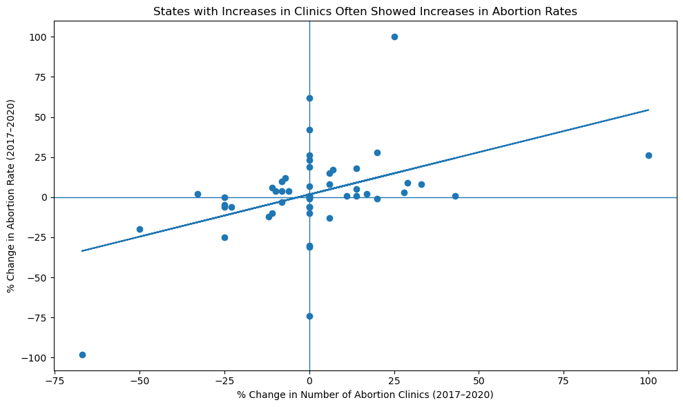
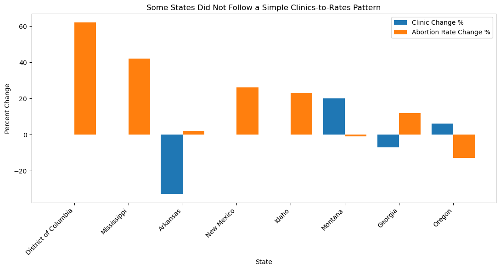

Proposition: Increases in abortion clinics were associated with increases in abortion rates between 2017 and 2020.
FOR the Proposition

Design Decisions and Rationale:
- Added a linear trend line to the scatter plot: A trend line implies a meaningful correlation, but the R-squared is weak, and many outliers contradict it. The line nudges viewers toward seeing a spurious relationship that the raw scatter doesn't show. (-1)
- Titled the scatter plot "States with Increases in Clinics Often Showed Increases in Abortion Rates": "often" is not quantified and implies a majority, when the actual share of states fitting the pattern is a minority. The title leads the viewer before they examine the data. (-1)
- Both axes are labeled accurately with correct units and time range. Axis labels faithfully represent what the data measures. No truncated axes or misleading scales were used. (+2)
- Did not selectively filter data or remove outliers; Included all data points to reflect an accurate representation of the data. This preserves data integrity and avoids cherry-picking. Though the presence of outliers weakens the relationship, the dataset comes off more credible and accurate, reflecting a present but not dramatic relationship that could seem fabricated to suit the perfect narrative. (+1)
AGAINST the Proposition

Design Decisions and Rationale:
- Highlighted contradictory states in the second bar chart. Selecting states where clinic and rate changes moved in opposite directions directs attention to exceptions. While these states exist, leading with outliers can make the overall pattern appear more chaotic than it is. (-1)
- Titled the chart "Some States Did Not Follow a Simple Clinics-to-Rates Pattern". Though not “simple" is an accurate description, the title is vague and misleading. The data could also be read as showing a weak but present tendency, which this framing helps suppress. (-1)
- Using a bar chart hides correlations that are obvious on scatter plots, shifting the emphasis from a cohesive frame of analysis to micro comparisons between smaller subsets. This often exaggerates mismatches while presenting limitations to general correlations. This enhances the narrative by drawing attention to specific isolated examples. (-1)
- Axes start at zero on all bar charts. No truncated y-axes are used, so bar heights represent proportional quantities accurately. (+2)
- Using high contrast colors side by side to accentuate the differences between clinic changes and rate changes. Placing bars next to each other allows for visual saliency, allowing for easy comparison (more perceptual work vs cognitive work) and directs attention towards differences quickly. The color choices also reinforce the emphasis on a mismatch between clinic and rate changes. (-0.5)
Final Reflection
Creating these two visualizations from the same dataset revealed how much a designer's choices before a single pixel is drawn determine what a viewer concludes. For the first set, we made decisions that weren't technically false: the trend line exists, and the bar chart states did grow in both metrics. But by showing only confirming cases and using a trend line on noisy data, we guided the viewer toward a conclusion the full dataset doesn't cleanly support. The distinction between lying and framing turned out to be surprisingly thin: both can produce the same misleading impression in a reader's mind.
The second set of visualizations was more earnest, but not neutral. Choosing to lead with category counts and contradictory examples is itself a rhetorical move. It draws the eye to complexity and exception rather than to any central tendency. What this exercise made clear is that there is no "view from nowhere" in data visualization. Every choice about what to show, how to aggregate, and what to title is an argument. The most honest designer can do is be explicit about those choices, which is what the -2 to +2 scoring rubric forces you to do.
This project also sharpened our understanding of what makes a design decision deceptive versus merely persuasive. Decisions that omit contradicting data (score: -2) feel categorically different from decisions that frame true facts with leading language (score: -1). Both shift a viewer's interpretation, but selective omission undermines the viewer's ability to reason correctly, even if they scrutinize the chart carefully, while a biased title can at least be mentally discounted once noticed. Going forward, we'd treat any aggregation or filtering step as a potential -2 risk that requires explicit justification.